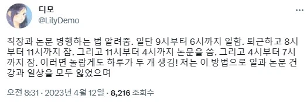

직장과 논문을 병행하는 방법 알려드림
댓글
두번째 줄까진 개쩌는 방법인줄
나도투잡할때 글케햇는데 난 웹소 연재했었는데 야간알바 8시간 갔다와서 바로 잠. 아침에 자니까 3-4시간정도자고 깬단말야 햇빛땜에
그럼 이제 일어나서 글을 4시간 정도 써
그리고 다시 자
일어나서 준비좀하고 알바를 가
알바쉬는날에는 글만써
알바하면서도 계속 전개같은건 생각하고 메모해놔
그러니까 40시간알바+주6회 연재분 되긴 되더라..
연재수익이 알바수익 따잇한 만1년차쯤에 그냥 알바관두고 이후로 쭉 문필 관련 일만함 ㄹㅇ
암튼 하려면 할 수 있다..
하루에 한시간 이내로 멍때리기나 유튜브 따위 보고 나머지시간 다 갈아넣으면 되긴 되더라..
문제가 누구만나거나 볼일좀보고오면 반나절이 날아가다시피해서 사회적 관계가 극도로 제한된다 정도?
근데 그런시간도 쪼개서 일을 하는 거니까 머.. 쩔수였다고 생각

ㄹㅇ 걍 아싸질하고 안쉬면 가능하긴 해...
잘벌림? 월2천?
초딩이냐? 월2천이러고있네
잘버는 애들은 월천킥 월2천킥 하길래 물어보는거지
나도 월2천 이상 버는데 물어볼수도 있지
월 2천 어케범;;;;;;;; 2천벌정도로 일하면 몸이 안남아날거같은데;
얼마 버세요? 제발 희망좀
TS미소녀하렘헌터탑등반 이따구면 안봄
아니 3시간씩 끊어서 자지말고 차라리 몰아서 6시간을 자..
새로운 자살방법이네
학문적 자유를 달성하고 논문과 관계없는 삶을 살게 되었다
파트박사 해보고 싶다ㅜㅜ
잠 줄여가면서 뭘 하는게 세상에서 제일 미련한 짓이다
저건 그나마 자는 시간은 6시간인데 무근본 분할수면이라 시간과 건강 모두를 잃는 방법이지
잠은 자야함 죽으면 뭔소용이냐
요즘엔 딸깍이라 저정도는 아니고
업무시간에 충분히 논문 작성가능함
자격증 공부한다고 퇴근하고 8시까지 밥먹고 씻고 눕고 잠깐자고 8시부터 12시까지 공부하는데 역류성 식도염을 얻었어요..
6시에 퇴근을 어케하노
하루를 12시간씩 2개로 쓰기. 한때 저렇게 살아본적 있는데 ㄹㅇ 죽을거같더라.
안녕하세요 8시 기상 6시 퇴근 새벽 4시까지 졸업논문쓰고 8시 기상하기 1달해서 학위딴 사람입니다.
나더 시험준비할때 하루에 두번씩 돌리고 싶어서
9~15 공부
15 식사후 당스파이크 활용 수면
21~3 공부
3 식사후 당스파이크 활용 수면
이러면 매 수면시간도 확보되고, 공부도 시험 시간표대로 할 수 있어서 좋았음.
대신 역류성 식도염을 득했음
부업하는데 5시간씩 몇년잤더니 고혈압 당뇨 다걸림
집와서 8-11 논문쓰고 11-7 자면 되는거아님? 이라고 하고싶지만 퇴근한 직후에 머리쓰는일 하기가 힘들어서 선잠 때리는게 이해는 가네
병행 한다고만 했지 성공한다고는 안 했다